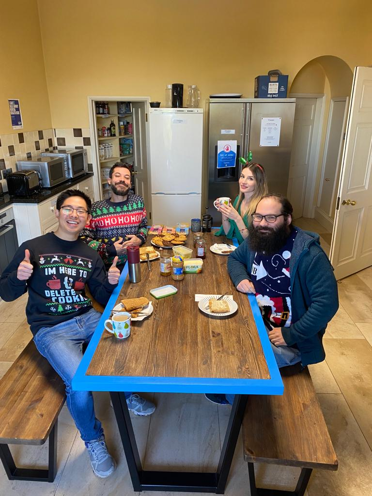

I can’t believe that we have come to the end of all the theory in this bootcamp. It felt like a lifetime ago since we started learning React so it was nice to come back to this topic and learn about more advanced topics (Nested Components, Routing, Context API and Class components). We were introduced to Typescript, a superset of Javascript, that allows us to write more robust code and Tailwind CSS, a CSS framework like Bootstrap but it gives us more freedom in the way elements are styled. Combined with React, I can definitely see how they can enable me to create half-decent looking frontend applications with less bugs. At the start of the week we also briefly covered GraphQL which is an alternative specification for building APIs. It is relatively new and not as well established in industry but I really liked learning about it using this playground.
Thursday was a pretty relaxed day where we had the freedom to do whatever we wanted. I decided to work on this post and my portfolio website. Our trainer Neal was feeling ill so took the day off. Instead we had Mike, the lead trainer, to cover for us. He decided to mix up the format for the morning recap. Normally on theory week mornings Neal would ask us questions about the topics covered from the previous day. Mike instead decided to challenge us to a duel. We had to come up with 5 questions on any topic covered on the course to ask him and he would do the same for us; we managed to narrowly beat him 0.5 points. Get in! Thursday was also Christmas Jumper Day and Mayden, the parent company of iOAcademy, were supporting Save the Children this year. It was a great excuse to bag myself a programming themed Christmas jumper and donate to charity. I’m starting to get into the festive spirit now.
We also had 2 guest talks this week. The first one was on Cypress which is a JavaScript-based front-end testing tool. It has a lot of similarities to Jest which we learnt about last week but also allows you to perform integration and End-to-End tests. It comes with a GUI and lots of features to mimic how a real user would use your application and record how your app responds to these actions. It’s a tool I’m sure I will encounter if I decide to work on frontend projects out in industry.
The second talk was on Microservices. Have you ever wondered how Tech giants like Netflix and Amazon write their software to serve millions of users? Well after this talk, I have a slightly better understanding and the answer is in the title. Instead of having one giant application that does everything, a Microservices design would split up the application into several smaller applications that only support a specific service of the business. For example Amazon might have a microservice purely to manage the product catalogue, another one for handling inventory, another one for tracking parcels, collecting payments from the customer etc. The benefits of this approach is that the teams can be organised by service and they can work independently. If there is a need to share data between the teams they can use message brokers like RabbitMQ. It is also more scalable, if one service is suddenly getting more traffic you can easily spin up more instances of that app instead of the entire app. Finally it can be more robust, if one microservice crashes it is less likely to take down the whole app. The main con of this design that was pointed out was the duplication of data and code which leads to more storage costs in the Cloud. Long story short this approach is only good when you are building an application with lots of moving parts at scale.